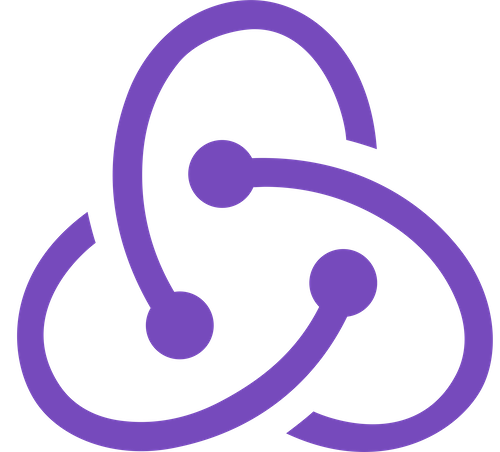
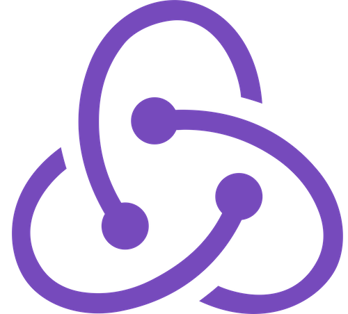
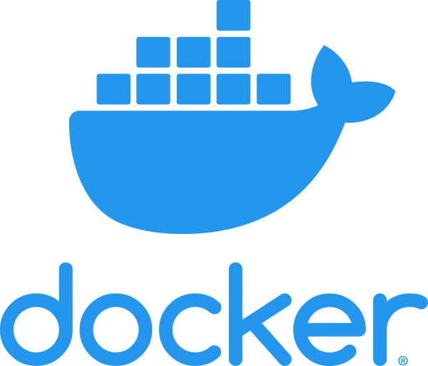
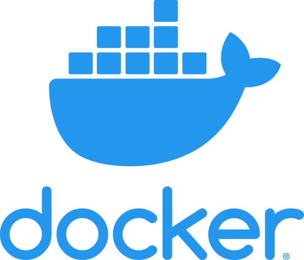

Josh Byster
CS and Mathematics Alumni
University of Illinois at
Urbana-Champaign
Passionate Developer
Please scroll down for my latest projects or connect with me on a channel below!
Projects

COVID-19 Interactive Timeline
As a visual learner, I found it challenging to get a full picture
on the pandemic's progression through many of the "daily snapshot"
maps that were shown on the news. Inspired by Andrew Munsell's
Ebola Visualization, this tool focuses on bridging the gap between the useful static
maps and the key visualization element: time. Contributions are
welcome on
GitHub.
Tech Stack:

Life After Hate — Resource Map
Life After Hate is a nonprofit organization committed to helping
people leave the violent far-right and lead compassionate lives.
In order to better track resource partners through their ExitUSA
program, we at
Hack4Impact UIUC
created an interactive resource map for Life After Hate staff.
Through this application, staff members can quickly log into a
secure portal and search for specific partners who make up the
Life After Hate resource network. I am incredibly fortunate to be
leading a team of talented developers working to bring this
project to fruition. Please see more details on our
GitHub.
Tech Stack:
 

 

UIUC Bus Tracker
Thousands of students at U of I rely on the Champaign-Urbana buses
each day as a means of getting to class. Unfortunately, many apps
to check bus times take too long to load. As college students, we
need this information as soon as possible. This is a simple,
minimalist web app designed for frequent bus riders in
Urbana—Champaign. No clutter, no ads, no hassle, just info. Used
by hundreds of students and faculty on a daily basis. Uses a CDN
and API response caching with Redis to ensure the fastest load
times for users. Please feel free to check out the
site,
frontend,
and
backend
code.
Tech Stack:


Philadelphia READS© Web App
Philadelpha READS© makes an impact on thousands of
students each year through their programs to help increase
literacy in Philadelphia. As a volunteer software engineer for
Hack4Impact, I had the opportunity to work with an incredible team
of developers to create a web app for students from fourth through
eighth grade. The app allows students to prepare for Philadelphia
READS Reading Olympics, an annual competition where over
1,500 participants form reading teams and put their comprehension
to the test. Please feel free to have a look at the
source code.
Tech Stack:


Twitter Support Vector Machine
Recognized by the American Statistical Association for outstanding
use in machine learning at science fair, this Python script allows
users to carry out authorship attribution algorithms on thousands
of tweets. After acquiring an Twitter API key, users can input as
many public channels as they would like, and the script loads and
parses every tweet, generates confusion matrices, finds the most
distinct words, and returns a trained and cross-validated
classifier. A properly trained model can correctly pick between
two possible authors of a of a given tweet 95% of the time! Please
feel free to have a look at the
source code.
Tech Stack: